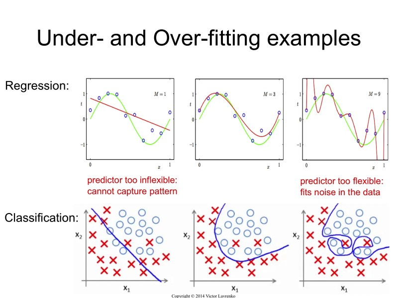

2020-03-25 08:19:32 과대적합 과소적합 Ref : https://m.blog.naver.com/PostView.nhn?blogId=qbxlvnf11&logNo=221324122821&proxyReferer=https%3A%2F%2Fwww.google.com%2F과대적합(overfitting)과대적합(overfitting)은 모델이 훈련 데이터에 너무 잘 맞지만 일반성이 떨어진다는 의미입니다.과소적합(underfitting)과소적합(underfitting)은 과대적합의 반대입니다.이는 모델이 너무 단순해서 데이터의 내재된 구조를 학습하지 못할 때 발생합니다.